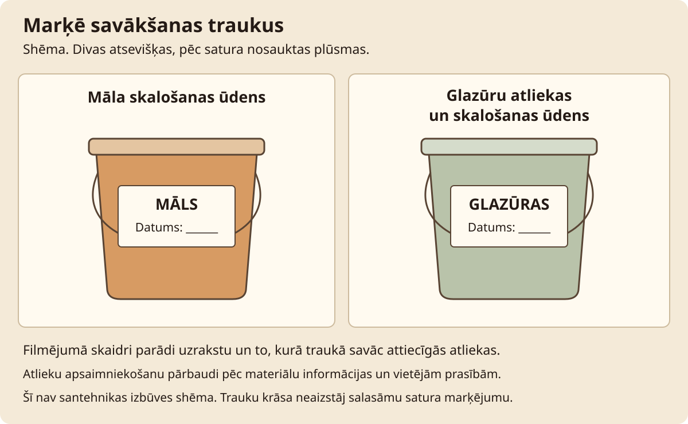

Darbnīcas labiekārtošana · Stunda 3 no 6
Ūdens savākšana un žūšanas novērojumi
Izveido skaidru savākšanas kārtību māla skalojumam un glazūru atliekām, pēc tam iekārto viena darba žūšanas pierakstu.
Stundas rezultāts. Marķēti savākšanas trauki, to lietošanas shēma un viena parauga žūšanas sākuma pieraksts.
Teksts un kadri sagatavoti izmēģinājumam. Norādītie laiki ir plānoti; darbnīcas izmēģinājums un video ieraksts vēl nav dokumentēti.
Pirms filmēšanas un prakses
Priekšzināšanas. Pieejama stabila, kopjama darba vieta un atsevišķi noslēdzami trauki.
Sistēmu demonstrē uz paliktņa, bez paštaisīta pieslēguma izlietnei. Glazūru trauka nozīmi parādi ar tukšu marķētu trauku. Māla nostādināšanai sagatavo nelielu viena zināma māla skalojuma paraugu un agrāk nostādinātu paraugu ar datumu.
| Rīks vai materiāls | Kam tas vajadzīgs |
|---|---|
| Nostādināšanas trauks | Zināma māla skalojuma savākšanai. |
| Atsevišķs noslēdzams trauks | Glazūru atlieku savākšanai ar sastāva marķējumu. |
| Etiķetes | Saturs, izcelsme, datums. |
| Žāvēšanas plaukts | Marķētam mācību darbam. |
| Pierakstu lapa | Novērojuma laiki un sistēmas jautājumi. |
| Paraugs | Sākuma stāvoklis | Izmantošana ainās |
|---|---|---|
| M1 | Svaigs zināma māla skalojums nelielā traukā | Savākšanas demonstrācija. |
| M2 | Iepriekš nostādināts tas pats māls, datēts | Nogulšņu novērojums. |
| G | Tukšs marķēts glazūru atlieku trauks | Atsevišķās plūsmas skaidrojums. |
| D | Mitrā māla darbs uz atbalsta | Žūšanas sākuma foto. |
Pārbaudi pirms ieraksta
- Trauki un paliktnis stabili, etiķetes vērstas pret kameru.
- M2 sagatavošanas datums ir īsts un pierakstīts.
- G demonstrācijā ir tukšs, ķīmiskas vielas filmēšanai netiek jauktas.
- Pie žūšanas darba redzams kods un sākuma datums.
Drošība šajā stundā
Māla un glazūru atliekas savāc atsevišķi; nezināmas vielas nejauc. Neturi šos traukus kopā ar pārtiku. Nenovadi skalojumu notekā, balstoties uz tā izskatu vai sieta esamību. Pastāvīgu pieslēgumu izvēlas un uzstāda pēc konkrētā risinājuma instrukcijas un vietējām prasībām.
Apstājies, ja: trauks tek, saturs nav identificēts vai glazūru atliekas sajauktas ar citu plūsmu. Noslēdz, marķē un noskaidro turpmāko rīcību.

Filmēšanas secība
Ainas un ieteicamais teksts
7 ainas · 3:50
Citāti ir pielāgojams pasniedzēja teksts. Pēc runas atstāj laiku darbības vērošanai. Ja kustība aizņem ilgāk, pagarini ainu un atjauno laika plānu.
-
1. Divas atsevišķas plūsmas
0:00-0:25 · 25 sAinas kods: telpa-03-a01
- Kadrējums
- Trauki M un G kopā uz paliktņa.
- Darbība
- Parādi etiķetes un nosauc, kāds saturs katrā paredzēts. Glazūru trauks paliek tukšs.
Ieteicamais runājamais teksts
Māla skalojumu un glazūru atliekas vācu atsevišķi. Šeit etiķete pasaka gan saturu, gan izcelsmi.
- Teksts ekrānā
- Māls / glazūru atliekas
- Pārbaudes kadrs
- Traukus var atšķirt arī bez krāsas.
- Pauze un montāža
- Nerādi glazūras liešanu demonstrācijas dēļ.
-
2. Marķējums un vieta
0:25-1:00 · 35 sAinas kods: telpa-03-a02
- Kadrējums
- Etiķetes tuvplāns un kopskats pie galda.
- Darbība
- Uzraksti zināmo mālu vai materiālu, datumu un atbildīgo pierakstu. Novieto tā, lai trauku neaizķertu ejā.
Ieteicamais runājamais teksts
Pierakstu, kas traukā ir. Nezināmu saturu nepievienošu tikai tāpēc, ka tas izskatās līdzīgs.
- Teksts ekrānā
- Saturs; izcelsme; datums
- Pārbaudes kadrs
- Etiķete salasāma pēc trauka novietošanas.
- Pauze un montāža
- Vispirms filmē rakstīšanu, tad gala etiķeti.
-
3. Māla atlikumu savākšana
1:00-1:40 · 40 sAinas kods: telpa-03-a03
- Kadrējums
- Rokas, sūklis un neliels M1 trauks.
- Darbība
- Savāc mitras māla atliekas un skalojumu paredzētajā traukā. Kustības lēnas, neveido šļakatas un nepārslogo trauku.
Ieteicamais runājamais teksts
Savācu atlikumus pie darba vietas. Šajā uzdevumā sistēmu nepievienojam notekai.
- Teksts ekrānā
- Savākšana pie avota
- Pārbaudes kadrs
- Nav izliešanas izlietnē.
- Pauze un montāža
- Saglabā vienu pilnu savākšanas kustību.
-
4. Nostādināts paraugs
1:40-2:15 · 35 sAinas kods: telpa-03-a04
- Kadrējums
- M1 un M2 blakus ar datumiem.
- Darbība
- Parādi nogulšņu slāni M2, trauku nekratot. Nosauc faktisko pagājušo laiku un to, ko novērojums nepierāda.
Ieteicamais runājamais teksts
Šis paraugs nostādināts agrāk. Redzam nogulsnes, bet dzidrums pats par sevi neapliecina ūdens tīrību.
- Teksts ekrānā
- Vēlāks paraugs M2; faktiskais laiks
- Pārbaudes kadrs
- Abi kodi un datumi redzami.
- Pauze un montāža
- Paraugu maiņa skaidri marķēta.
-
5. Pastāvīgās sistēmas jautājumi
2:15-2:50 · 35 sAinas kods: telpa-03-a05
- Kadrējums
- Izvēlētās ierīces instrukcija vai jautājumu lapa.
- Darbība
- Pieraksti, vai zināma ierīce, kā piekļūt apkopei un kur noskaidrot atlieku nodošanu. Ja ierīces nav, neatveido izdomātu pieslēgumu.
Ieteicamais runājamais teksts
Pieslēgtai sistēmai vajag konkrētu instrukciju un apkopes piekļuvi. Trūkstošo pierakstu kā jautājumu.
- Teksts ekrānā
- Apkope; noplūdes; atlieku nodošana
- Pārbaudes kadrs
- Ir konkrēts nākamais pārbaudes solis.
- Pauze un montāža
- Dokumentā parādi tikai attiecīgo sadaļu.
-
6. Žūšanas sākuma punkts
2:50-3:30 · 40 sAinas kods: telpa-03-a06
- Kadrējums
- Darbs D uz plaukta, pēc tam žurnāls.
- Darbība
- Izvēlies stabilu vietu bez tieša karstuma un izteikta caurvēja. Pieraksti pārsegumu, datumu un novēroto telpas stāvokli.
Ieteicamais runājamais teksts
Šim darbam saglabāju sākuma foto. Žūšanu vērtēšu pēc faktiskajām izmaiņām vairākās apskatēs.
- Teksts ekrānā
- Darbs D; sākuma datums
- Pārbaudes kadrs
- Darbs un pieraksts identificējami pēc koda.
- Pauze un montāža
- Nerādi žūšanas beigas kā šīs sesijas rezultātu.
-
7. Sistēmas pieraksts
3:30-3:50 · 20 sAinas kods: telpa-03-a07
- Kadrējums
- Trauku shēma un darba lapa.
- Darbība
- Pārbaudi etiķetes, noslēgšanu un nākamos novērojumus.
Ieteicamais runājamais teksts
Rezultāts ir saprotama savākšanas kārtība un viens sākuma pieraksts. Tālāk pievērsīsimies putekļu kontrolei.
- Teksts ekrānā
- Tālāk: putekļi un uzkopšana
- Pārbaudes kadrs
- Atvērti jautājumi palikuši redzami.
- Pauze un montāža
- Beigās parādi arī marķēto glabāšanas vietu.
Ainu atzīmes saglabājas šajā pārlūkā, ja pieejama lokālā glabāšana. Tās atzīmē ieraksta progresu, nevis tehniskās drošības pārbaudi.
Prakse darbnīcā
Pamatuzdevums. Marķēti savākšanas trauki, to lietošanas shēma un viena parauga žūšanas sākuma pieraksts.
| Darba posms | Plānotais laiks |
|---|---|
| Trauku un marķējuma sagatavošana | 15 min |
| Māla savākšanas demonstrējums | 10 min |
| Iepriekš nostādināta parauga salīdzinājums | 10 min |
| Apkopes un nodošanas jautājumi | 10 min |
| Žūšanas sākuma foto un uzkopšana | 15 min |
| Kopā | 60 min |
Filmēšana. Plāno 45-75 minūšu atsevišķu filmēšanas sesiju dokumentiem, telpas skatiem un atkārtojumiem. Šī aplēse vēl jāpārbauda.
Gaidīšana. Nostādināšanu un žūšanu novēro atsevišķos laikos. Dzidrāks ūdens nav tīrības vai atļautas novadīšanas apliecinājums. Nodošanas kārtību noskaidro pie attiecīgā apsaimniekotāja.
Ja paliek laiks. Palūdz otram cilvēkam pēc shēmas norādīt pareizo savākšanas trauku, nepārvietojot saturu.
Ja jāpārtrauc. Noslēdz un marķē traukus, novieto stabilā vietā un savāc mitrumu no virsmām.
Ko darīt, ja neizdodas
| Novērotā pazīme | Iespējamais iemesls | Nākamā darbība |
|---|---|---|
| Trauku saturs nav atšķirams | Etiķete nepilnīga vai paslēpta | Nesajauc saturu; atjauno marķējumu pēc dokumentētās izcelsmes. |
| Nogulsnes atkal sajauktas | Trauks kustināts pirms apskates | Atstāj stabilā vietā un pieraksti jaunu apskates laiku. |
| Dzidrums nosaukts par tīrību | Vizuālais novērojums sajaukts ar attīrīšanas pārbaudi | Video precizē novērojuma robežu un atsevišķi noskaidro nodošanu. |
Drukājama darba lapa · Darbnīcas labiekārtošana 03
Ūdens savākšana un žūšanas novērojumi: pieraksti
Datums: ____________________ Darba / māla kods: ____________________
Mērķis. Marķēti savākšanas trauki, to lietošanas shēma un viena parauga žūšanas sākuma pieraksts.
Pirms uzdevuma. Māla un glazūru atliekas savāc atsevišķi; nezināmas vielas nejauc. Neturi šos traukus kopā ar pārtiku. Nenovadi skalojumu notekā, balstoties uz tā izskatu vai sieta esamību. Pastāvīgu pieslēgumu izvēlas un uzstāda pēc konkrētā risinājuma instrukcijas un vietējām prasībām.
| Mēģinājums / pārbaude | Novērojums / dati | Kas vēl jānoskaidro | Nākamā darbība |
|---|---|---|---|
| 1. pārbaude | |||
| 2. pārbaude | |||
| 3. pārbaude |
Ko pierakstīt darbnīcas žurnālā
- Katra trauka saturs un izcelsme.
- Nostādināšanas sākums un faktiskās apskates laiks.
- Izvēlētās sistēmas instrukcija un apkopes jautājumi.
- Darba D kods, pārsegums un žūšanas novērojumi.
Viena nākamā izmaiņa:
Faktiskais darba laiks un pieredzes līmenis:
Pārbaudītais rezultāts un neatbildētie jautājumi:
Palīgmateriāli šai stundai
- Kā pārstrādāt māla atlikumus
- Mitruma kontrole mazā darbnīcā
- Kā organizēt glazūru un materiālu glabāšanu
- Darbnīcas ikdienas tīrīšanas sistēma

Pārbaudītie uzziņas materiāli
Avoti pārskatīti 10.10.2026. Tehniskās norādes piemēro attiecīgajam procesam un konkrētajai iekārtai. Ārvalstu prasības nav Latvijas normatīvu aizstājējs.
Izmēģinājuma un montāžas pieraksts
Scenārija redakcija: Praktiskais izmēģinājums: vēl nav dokumentēts. Aizpildi tabulu pēc faktiskā mēģinājuma un labo ainu laikus.
| Ainas kods / dublis | Izmantojamais fragments | Kas jāprecizē |
|---|---|---|
| telpa-03-a___ | ________________ | ________________ |
| telpa-03-a___ | ________________ | ________________ |